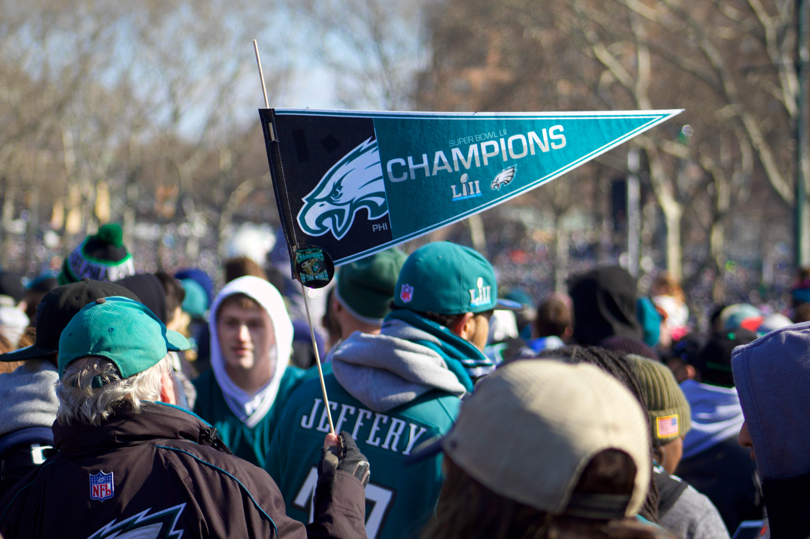
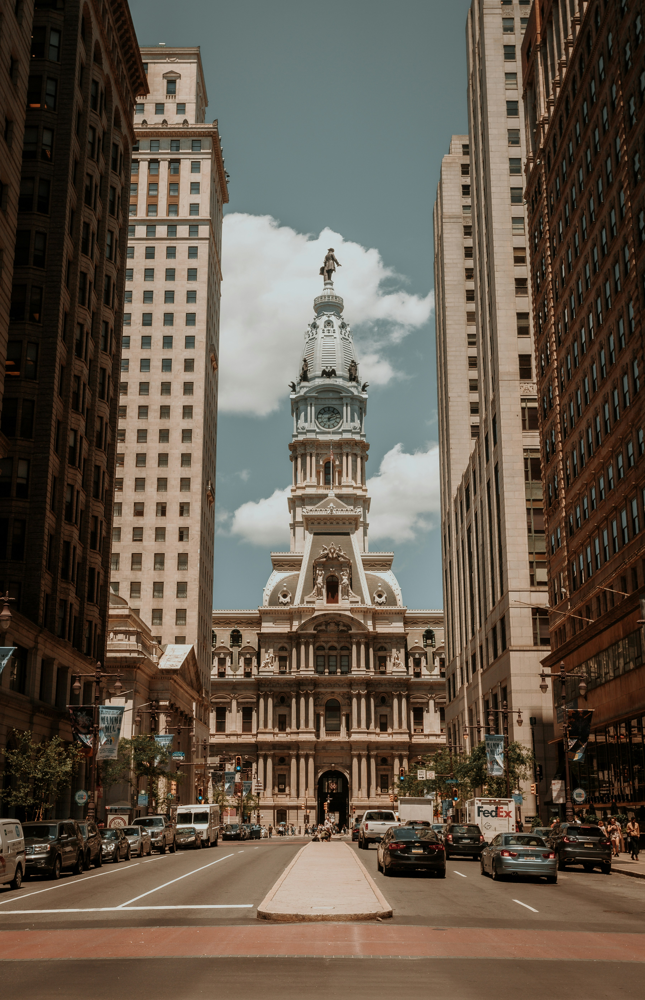

Philadelphia Eagles
 American football is a team sport that combines elements of strategy, physical skill, and teamwork. It is predominantly played in the United States, where it is one of the most popular sports. The game is characterized by its unique blend of strategic play and physical contact.
In American football, each team consists of 11 players on the field at a time. The primary objective is to score points by advancing the ball into the opposing team's end zone, either by carrying it or by catching a pass in the end zone. Points can also be scored through field goals and safeties.
American football is a team sport that combines elements of strategy, physical skill, and teamwork. It is predominantly played in the United States, where it is one of the most popular sports. The game is characterized by its unique blend of strategic play and physical contact.
In American football, each team consists of 11 players on the field at a time. The primary objective is to score points by advancing the ball into the opposing team's end zone, either by carrying it or by catching a pass in the end zone. Points can also be scored through field goals and safeties.
In 2017, the city of Philadelphia was electrified by the triumphant victory of its beloved Eagles, who soared to the pinnacle of success in Super Bowl LII. It was a season that will be etched in the hearts of fans forever, culminating in an epic showdown that saw the Eagles claim their rightful place as champions. The Philadelphia Eagles were last champions during the 2017 season, where they won the Super Bowl LII. The Eagles beat the New England Patriots with a score of 41-33

Philadelphia City Hall is an iconic structure located at the intersection of Broad and Market Streets, in the center of Center City Philadelphia. City Hall has been the world's tallest masonry building since the end of the 19th century; it's a magnificent example of French Second Empire architecture and is topped by a statue of William Penn, the founder of Pennsylvania. For many years, it was the tallest building in Philadelphia, and by an informal gentleman's agreement, no building was permitted to exceed the height of the statue of William Penn. This agreement held until 1987, when the construction of One Liberty Place surpassed its height. City Hall remains one of the most recognizable landmarks in Philadelphia.